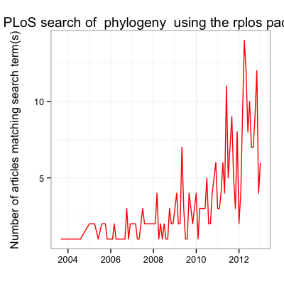
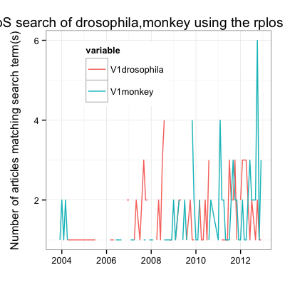

Usage
plot_throughtime(terms, limit = NA, gvis = FALSE, url = "http://api.plos.org/search",
key = getOption("PlosApiKey", stop("need an API key for PLoS Journals")), ...,
curl = getCurlHandle())
Arguments
- terms
- search terms (character)
- limit
- number of results to return (integer)
- gvis
- use google visualization via the googleVis
package (logical)
- url
- the PLoS API url for the function (should be
left to default)
- key
- your PLoS API key, either enter, or loads from
.Rprofile
- ...
- optional additional curl options (debugging
tools mostly)
- curl
- If using in a loop, call getCurlHandle()
first and pass the returned value in here (avoids
unnecessary footprint)
Value
Number of search results (vis = FALSE), or number of
search in a table and a histogram of results (vis =
TRUE).
Description
Plot results through time for serach results from PLoS
Journals.
Examples

Warning message:
Removed 1 rows containing missing values (geom_path).
